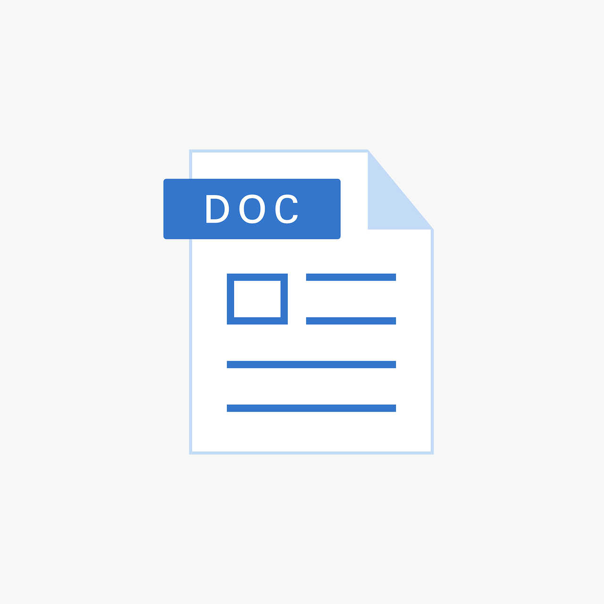

<section>
  <div
    class="image"
    *ngFor="let attachmentUrl of actualAttachmentUrls; let i = index"
  >
    <!-- Löschen-Button -->
    <mat-icon
      class="material-symbols-outlined close-icon"
      (click)="onDeleteClick(attachmentUrl, $event)"
      *ngIf="message?.userId === userService.userId || message === ''"
    >
      close
    </mat-icon>

    <!-- Bilddateien -->
    

    <!-- PDF-Dateien -->
    

    <!-- Word-Dokumente -->
    

    <!-- Text- oder CSV-Dateien -->
    

    <!-- Excel-Dateien -->
    

    <!-- Fallback für unbekannte Formate -->
    <p *ngIf="getFileType(attachmentUrl) === 'unknown'">
      Dieses Dateiformat wird nicht unterstützt.
    </p>
  </div>
</section>
